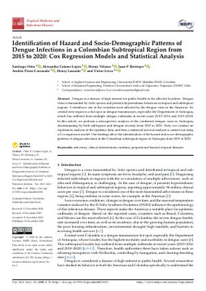
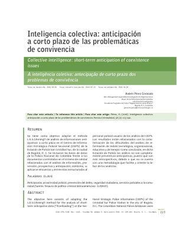

2 artículos
Artículos revisados por pares
Artículos validados por revisión experta: transmisión de dengue en una región subtropical colombiana y anticipación de problemáticas de convivencia mediante inteligencia colectiva.
- Identification of Hazard and Socio-Demographic Patterns of Dengue Infections in a Colombian Subtropical Region (2015–2020): Cox Regression Models Tropical Medicine and Infectious Disease, 8(1): 30 · 2023
-

Inteligencia colectiva: anticipación a corto plazo de las problemáticas de convivencia Revista Criminalidad, 58(2): 223–240 · 2016